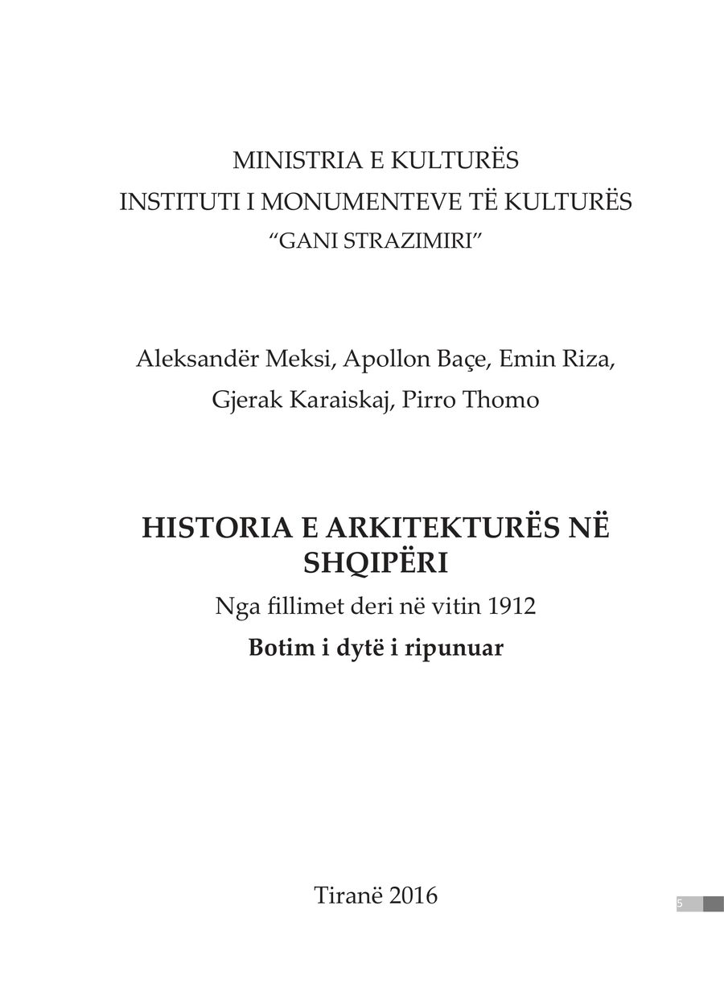

History of Architecture in Albania
Co-authors: A. Meksi, A. Baçe, E. Riza, Gj. Karaiskaj, P. Thomo · Second revised edition · 2016 · From the beginnings to 1912
The general history of Albanian architecture from the beginnings to 1912, by five authors. The second edition was overseen by Pirro Thomo.
See also
- Pages
- 887
- Year
- 2016
- Publisher
- Instituti i Monumenteve të Kulturës “Gani Strazimiri”, Tiranë
- Language
- Albanian